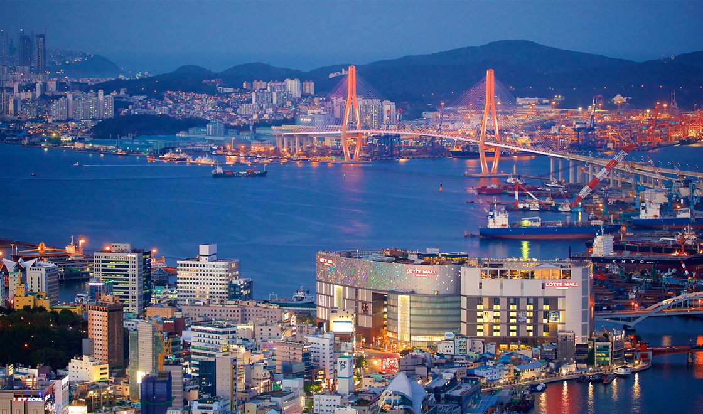

SUA PRÓXIMA VIAGEM:
Conheça Busan
Busan, a estrela em ascensão da Coreia do Sul, oferece de tudo, desde churrascarias de primeira linha até tradicionais barracas de comida de rua. Aqui, exploramos a segunda cidade da Coreia do Sul e descobrimos as suas ofertas culinárias.